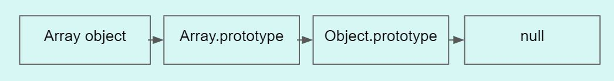
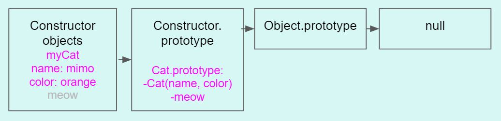
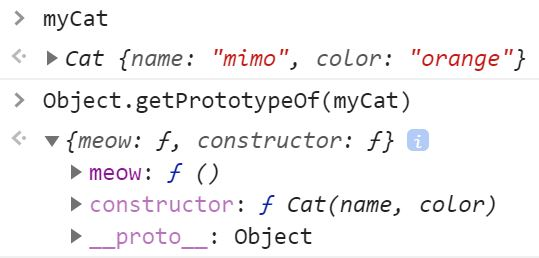

I am sharing below what I am doing everyday to learn programming.
I will try as well to write a few small posts to explain concepts I have learned and make it as clear as possible.
For the moment, I like this single page because it is minimalist. I will think later about using static site generators such as Jekyll.
In Javascript, prototypes are objects that facilitate linking of objects and delegation of methods or properties.
When we create a new array in Javascript, a lot is done behind the scenes. A new array is created thanks to Array.prototype that contains the Array constructor and specific methods used by Array objects. This Array.prototype is linked to the Object.prototype.
As illustrated in the image, Array objects inherit from an Array.prototype that inherits from an Object.prototype. When a method or property is called on an Array object, Javascript will first try to find the properties or methods called in the Array object, then in the Array.prototype, finally in the Object.prototype.
Using prototypes makes it easier to distinguish between unique vs shared properties. In the example below, we can decide to remove the meow method from the constructor Cat and add it to the prototype Cat.prototype. By using this technique, all the new objects created with the constructor will not contain the method meow anymore. It will be stored in the Cat.prototype.
 When we need to create many objects with the same type. We can use an object constructor function to create a blueprint.
Constructors automatically set this to a fresh new object and return the object at the end.
Scope determines the visibility of one variable. Variables defined inside a function are not accessible from outside the function.
Variables declared within a function become local to the function. Function can always remember the variables that they could see at creation.
A variable declared outside a function becomes global. All scripts and functions on a webpage can access it. These variables are saved in the window.
Variables that are not declared in a function but that are not global are closures.
Methods are simply properties equal to a function in an object.